Home / Past papers / MLF Quiz 1 / this paper
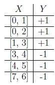
Consider the following input data points: Which among the following models has the least misclassification error?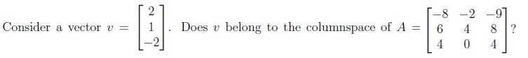
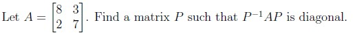
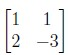
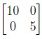
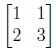
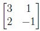
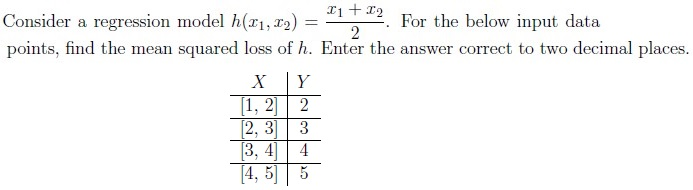
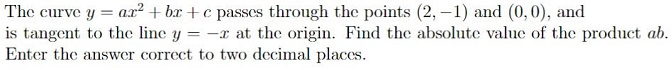
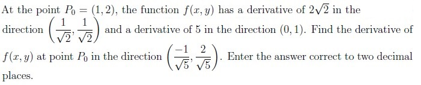
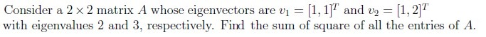
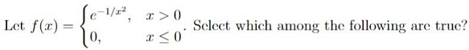
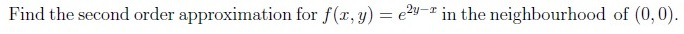
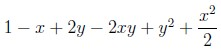
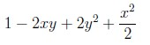
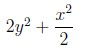
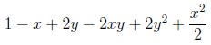
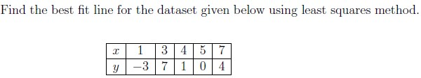
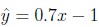
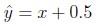
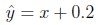
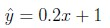
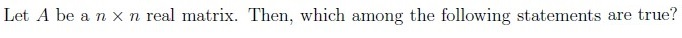
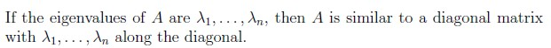
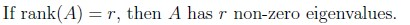
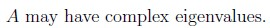
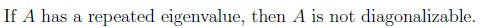
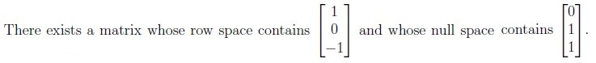
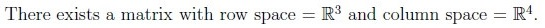
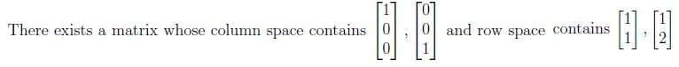
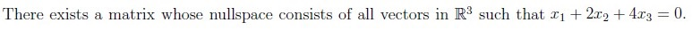
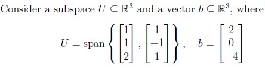
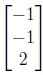
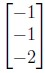
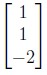
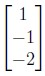
Auto-generated summary from the source site. Handy as a checklist; the lessons above explain each idea from scratch.
where is the unit vector in the direction of interest.